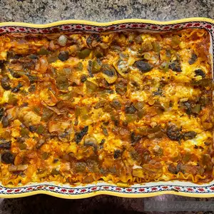

This hearty, vegetable lasagna is the only lasagna my husband will eat. We love it!!! Hope you all enjoy as much as we do.
Prep: 25 mins
Cook: 1 hrs
Additional: 15 mins
Total: 1 hrs 40 mins
Cook the lasagna noodles in a large pot of boiling water for 10 minutes, or until al dente. Rinse with cold water, and drain.
In a large saucepan, cook and stir mushrooms, green peppers, onion, and garlic in oil. Stir in pasta sauce and basil; bring to a boil. Reduce heat, and simmer 15 minutes.
Mix together ricotta, 2 cups mozzarella cheese, and eggs.
Preheat oven to 350 degrees F (175 degrees C). Spread 1 cup tomato sauce into the bottom of a greased 9x13 inch baking dish. Layer 1/2 each, lasagna noodles, ricotta mix, sauce, and Parmesan cheese. Repeat layering, and top with remaining 2 cups mozzarella cheese.
Bake, uncovered, for 40 minutes. Let stand 15 minutes before serving.